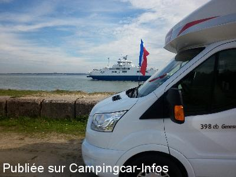
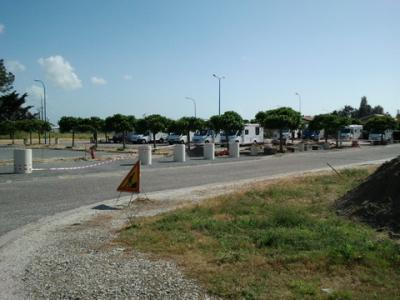
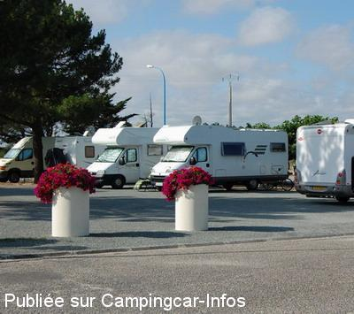
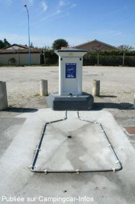
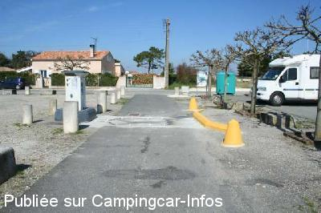
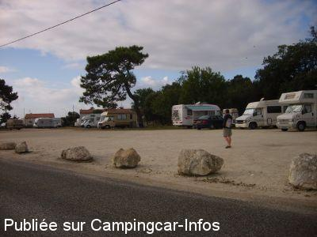

ASN = Aire de services avec stationnement nuit possible de :
LE VERDON SUR MER
(N° 823)
Accès/adresse :
Rue du Soleil Levant - Allée des Baïnes
33123 LE VERDON SUR MER
33123 LE VERDON SUR MER
Latitude : (Nord) 45.54607° Décimaux ou 45° 32′ 45′′
Longitude : (Ouest) -1.05481° Décimaux ou -1° 3′ 17′′
Tarif : 2015
Stationnement : 9 €
Eau, 1 h d'électricité : 2 €
Paiement par carte bancaire
Type de borne : RACLET
Services :


Tous commerces
Autres informations :
2 parkings :
- parking A : 18 emplacements réservés aux grands C-C
- parking B : 33 emplacements
Accès avec barrière
Sortie possible sans perdre sa place
Tel: +33 (0)556 096 019
http://www.tourisme-leverdon.com/o%C3%B9-dormir/aire-de-camping-car/

Le 12/10/2015 par CLIFORD 33

Le 09/06/2012 par mino22

Le 26/07/2010 par LEVOYAGEUR68

Le 01/04/2008 par Fanfan

Le 01/04/2008 par Fanfan

Le 10/10/2007 par Annie 22
de
Pauphillat
le 22/07/2015 :
Bonjour
Nous avons passés une nuit.
Aire Propre bien organisée,calme,à peine 100 m de la plage.
Tous services.
Système de ticket avec barrière pour entrer et sortir, sortie provisoire possible.
9 euros les 24 heures et 2 euros l'eau 10 mn.
Très bien.
Bonjour
Nous avons passés une nuit.
Aire Propre bien organisée,calme,à peine 100 m de la plage.
Tous services.
Système de ticket avec barrière pour entrer et sortir, sortie provisoire possible.
9 euros les 24 heures et 2 euros l'eau 10 mn.
Très bien.
de
jyves stephant
le 30/04/2015 :
nous avons passé 2 nuits sur cette aire très agréable.nuit calme a proximité de la plage.Et nous avons pris le bateau (la bohème) pour visiter le phare de CORDOUAN.Nous remercions la commune pour cette aire ainsi que le personnel de la vedette qui nous a fait découvrir ce fameux phare.
jyves
nous avons passé 2 nuits sur cette aire très agréable.nuit calme a proximité de la plage.Et nous avons pris le bateau (la bohème) pour visiter le phare de CORDOUAN.Nous remercions la commune pour cette aire ainsi que le personnel de la vedette qui nous a fait découvrir ce fameux phare.
jyves
de
YvesObene
le 13/09/2013 :
Aire très agréable 8€ pour 24 h en saison et 5€ hors saison.
Attention, le nombre de place libres ne correspond pas forcément à ce qui est annoncé à la borne car les sorties sont possibles avec le code fourni à l'arrivée. A chaque sortie, la borne demande si la sortie est provisoire ou définitive.
Aire très agréable 8€ pour 24 h en saison et 5€ hors saison.
Attention, le nombre de place libres ne correspond pas forcément à ce qui est annoncé à la borne car les sorties sont possibles avec le code fourni à l'arrivée. A chaque sortie, la borne demande si la sortie est provisoire ou définitive.
de
keepcontrol
le 27/07/2013 :
je confirme pour le Leclerq. Un léger bug de la borne : elle indiqué qu'il ne restait plus que 5 places alors que nous étions que 6 sur le parking
je confirme pour le Leclerq. Un léger bug de la borne : elle indiqué qu'il ne restait plus que 5 places alors que nous étions que 6 sur le parking
de
lufloarsa
le 28/05/2013 :
Aire située à 200 m de la plage
pistes cyclables très belles en forêt
Dans le village, pour l'instant commerces rares mais ouverture d'un Leclerc courant juin.
Aire située à 200 m de la plage
pistes cyclables très belles en forêt
Dans le village, pour l'instant commerces rares mais ouverture d'un Leclerc courant juin.
de
serge 34
le 26/07/2012 :
§
serge34 de passage en juillet 2012
certes refait a neuf et a 8€ mais attention au bug de l'informatique quand vous sélectionnez un parking A ou B bien renter dans le bon , car le système vous laisse renter n'importe ou mais comme il faut le code pour en sortir si vous avez choisi le mauvais vous resterez prisonnier , cette borne a étais mise en service un peut "trroooop" vite il manque toute la signalétique des parkings et de l'utilisation de la borne , attention elle ne prend pas toute les cartes , le site reste exceptionnel au bord de la plage , un grand merci au garde champêtre qui fus d'une patience olympique avec les camping-cariste prisonniers
§
serge34 de passage en juillet 2012
certes refait a neuf et a 8€ mais attention au bug de l'informatique quand vous sélectionnez un parking A ou B bien renter dans le bon , car le système vous laisse renter n'importe ou mais comme il faut le code pour en sortir si vous avez choisi le mauvais vous resterez prisonnier , cette borne a étais mise en service un peut "trroooop" vite il manque toute la signalétique des parkings et de l'utilisation de la borne , attention elle ne prend pas toute les cartes , le site reste exceptionnel au bord de la plage , un grand merci au garde champêtre qui fus d'une patience olympique avec les camping-cariste prisonniers
de
Augereau adjoint mairie du Verdon sur mer chargé d
le 17/07/2012 :
Bonjour, le fonctionnement de l'aire a changé. Il est mis en place à partir de ce jour, un payement par carte bancaire. 2 parking sont mis à disposition le parking A de 18 emplacements plutôt réservé pour les grands camping-car, celui qui existe déjà et le parking B nouveau face à l'ancien, 33 emplacements. Chaque emplacement mesure 8m X 5m. Coût pour 24 heures 8€ du 1 juin au 30 septembre et 5€ du 1 octobre au 31 mai. Pendant l'achat de 24, 48 ou 72 heures les camping-car peuvent entrer ou sortir à leur guise une place leur est réservée.Une aire de service pour 2 camping-car coût pour 10mn, soit 100 litres, 2€. Le système est le matériel Urba Flux il comporte un totem de payement, deux barrières pour l'accès au parking et l'aire de service à l'extérieur des aires de parking.
Cordialement
Bonjour, le fonctionnement de l'aire a changé. Il est mis en place à partir de ce jour, un payement par carte bancaire. 2 parking sont mis à disposition le parking A de 18 emplacements plutôt réservé pour les grands camping-car, celui qui existe déjà et le parking B nouveau face à l'ancien, 33 emplacements. Chaque emplacement mesure 8m X 5m. Coût pour 24 heures 8€ du 1 juin au 30 septembre et 5€ du 1 octobre au 31 mai. Pendant l'achat de 24, 48 ou 72 heures les camping-car peuvent entrer ou sortir à leur guise une place leur est réservée.Une aire de service pour 2 camping-car coût pour 10mn, soit 100 litres, 2€. Le système est le matériel Urba Flux il comporte un totem de payement, deux barrières pour l'accès au parking et l'aire de service à l'extérieur des aires de parking.
Cordialement
de
Val 31
le 25/02/2011 :
passage et arrêt une nuit en fevrier 2011.Beaucoup plus calme et agréable en hiver.
passage et arrêt une nuit en fevrier 2011.Beaucoup plus calme et agréable en hiver.
de
LEVOYAGEUR68
le 26/07/2010 :
Quelle belle aire de camping-cars, très bien entrenue et fleurie, au calme, à coté de la plage et du centre du village. L'accès y est corect même pour les grands camping-cars et la vidange accessible par les 2 cotés de la route et pour 5€, correct aussi.
Quelle belle aire de camping-cars, très bien entrenue et fleurie, au calme, à coté de la plage et du centre du village. L'accès y est corect même pour les grands camping-cars et la vidange accessible par les 2 cotés de la route et pour 5€, correct aussi.
de
cochard
le 24/01/2010 :
Aire devenue payante, bruyante (cirque), pas facile d'accès, l'agrandissement est nul! Quand on est maire, on se doit de connaitre et d'appliquer la loi à savoir que si l'on interdit le stationnement des CC sur sa commune on se doit de mettre à leur disposition un stationnement gratuit. Sinon, on peut stationner partout.
Aire devenue payante, bruyante (cirque), pas facile d'accès, l'agrandissement est nul! Quand on est maire, on se doit de connaitre et d'appliquer la loi à savoir que si l'on interdit le stationnement des CC sur sa commune on se doit de mettre à leur disposition un stationnement gratuit. Sinon, on peut stationner partout.
de
Chantal Pujolle
le 24/06/2009 :
Je tiens à signaler le désagrément subi par un couple d'amis (Mr et Mme Sajous) qui a stationné durant les vacances de Pâques 2009, sur l'aire de camping car du Verdon sur Mer: Durant la nuit, un groupe de jeunes a "caillassé" leur camping car stationné sur la place en bordure de l'allée pavée.Mes amis ont réussi à les faire partir.Cependant, les jeunes sont revenus et mes amis les ont fait fuir en les menaçant.Leur camping car est néanmoins abimé et nécessite des travaux en carosserie, ainsi qu'une réparation du pare brise, ce qui représente de gros frais, le véhicule étant un intégral.
Mes amis ont signalé les faits immédiatement à la gendarmerie de Bordeaux.Il n'y a eu aucune intervention de la part des gendarmes.Le lendemain,plainte est déposée à la gendarmerie de Soulac et Mr le Maire de la commune du Verdon a également été informé.Il n'y a eu aucune réaction de sa part.D'après les riverains, coutumiers de ce genre de nuisance,Mr le Maire ne reagit à aucun signalement de ce type.
C'est dommage, et mes amis m'affirment que cette aire pourrait être fort sympathique si on ne 'y sentait pas tellement insécurisés.
La commune devrait réfléchir à ce problème crucial.
Je tiens à signaler le désagrément subi par un couple d'amis (Mr et Mme Sajous) qui a stationné durant les vacances de Pâques 2009, sur l'aire de camping car du Verdon sur Mer: Durant la nuit, un groupe de jeunes a "caillassé" leur camping car stationné sur la place en bordure de l'allée pavée.Mes amis ont réussi à les faire partir.Cependant, les jeunes sont revenus et mes amis les ont fait fuir en les menaçant.Leur camping car est néanmoins abimé et nécessite des travaux en carosserie, ainsi qu'une réparation du pare brise, ce qui représente de gros frais, le véhicule étant un intégral.
Mes amis ont signalé les faits immédiatement à la gendarmerie de Bordeaux.Il n'y a eu aucune intervention de la part des gendarmes.Le lendemain,plainte est déposée à la gendarmerie de Soulac et Mr le Maire de la commune du Verdon a également été informé.Il n'y a eu aucune réaction de sa part.D'après les riverains, coutumiers de ce genre de nuisance,Mr le Maire ne reagit à aucun signalement de ce type.
C'est dommage, et mes amis m'affirment que cette aire pourrait être fort sympathique si on ne 'y sentait pas tellement insécurisés.
La commune devrait réfléchir à ce problème crucial.
de
Rolf Ca.
le 26/01/2009 :
offiziell auf der Homepage nachzulesen:
=========================================
L'aire de camping-cars, située en face de la plage de la Chambrette, vous accueille toute l'année.
La nuitée est de 3,00€ (de 18h00 à 8h00)- des jetons vendus au prix de 3,00€ dans les commerces du Verdon, à l'Office de Tourisme et à la Mairie, vous permettront d'obtenir 100 litres d'eau ou 1 heure d'électricité.
==================
zu deutsch: ab 18.00h sind 3.0€/Nacht fällig.
siehe auch http://www.ville-verdon.org/
offiziell auf der Homepage nachzulesen:
=========================================
L'aire de camping-cars, située en face de la plage de la Chambrette, vous accueille toute l'année.
La nuitée est de 3,00€ (de 18h00 à 8h00)- des jetons vendus au prix de 3,00€ dans les commerces du Verdon, à l'Office de Tourisme et à la Mairie, vous permettront d'obtenir 100 litres d'eau ou 1 heure d'électricité.
==================
zu deutsch: ab 18.00h sind 3.0€/Nacht fällig.
siehe auch http://www.ville-verdon.org/
de
Soisik Fanfan
le 01/04/2008 :
Super accueil par les commerçants de cette commune. Aire très calme (hors saison) à quelques dizaines de mètres de la plage. L'endroit manque encore d'ombre, mais les arbres grandissent et d'ici quelques temps ce sera OK. Il y a un service "laverie" 7/7. Les renseignements sont affichés sur le mur du local poubelles. La borne de service est pratique. Tous commerces à proximité.
Super accueil par les commerçants de cette commune. Aire très calme (hors saison) à quelques dizaines de mètres de la plage. L'endroit manque encore d'ombre, mais les arbres grandissent et d'ici quelques temps ce sera OK. Il y a un service "laverie" 7/7. Les renseignements sont affichés sur le mur du local poubelles. La borne de service est pratique. Tous commerces à proximité.